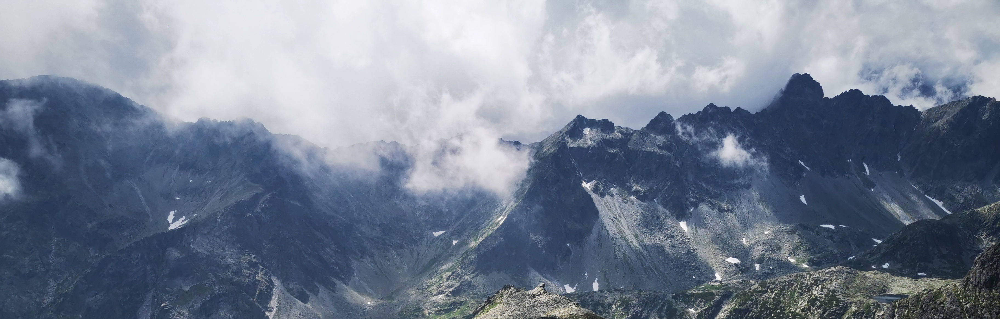

Moje Schroniska Tatrzańskie
Odznaka „Schroniska Tatrzańskie” jest odznaką regionalną, ustanowioną przez Hutniczo-Miejski Oddział PTTK w Krakowie z inicjatywy Klubu Turystyki Górskiej „Wierch”.
Odwiedzone miejsca oznaczone są zdjęciem i datą pobytu. Kliknij, aby powiększyć.

Murowaniec
jeszcze nieodwiedzone
jeszcze nieodwiedzone